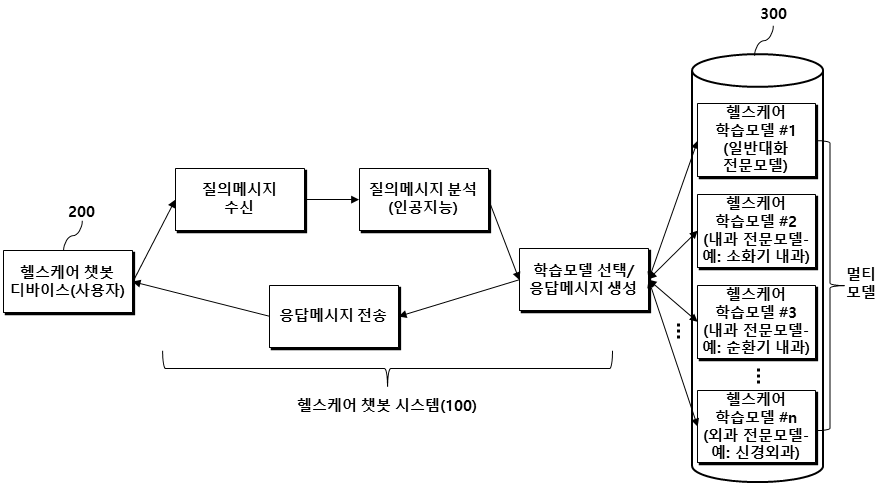

AI · 기술해설18
AI · 기술해설18검색이 지능을 구원하는 네 가지 방법 — Lexical·Semantic·Hybrid·Graph RAG와 환각의 해부
대형언어모델의 지식은 학습이 끝나는 순간 굳어 버린다. 검색증강생성(RAG)은 모델 바깥의 문서를 끌어와 그 빈틈을 메운다. Lexical·Semantic·Hybrid·Graph 네 검색 아키텍처를 원리부터 해부하고, 그것이 환각을 어떻게 줄이며 무엇이 여전히 남는지를 짚는다.
 AI · 기술해설14
AI · 기술해설14거부를 지운 모델: Abliterated LLM의 위험과 존재 이유
언어모델의 ‘거부’는 가중치 속 한 방향으로 표현된다. 그 방향만 지운 무삭제 모델을 정상판과 나란히 시험한 기록, 그리고 위험과 필요 사이의 균형.
LLM은 공간을 이해하는가: 7,650문항 공간추론 벤치마크
지도를 읽는 일은 사람에게 너무 당연하다. 6개 대형언어모델을 7,650문항으로 해부하며 ‘공간을 이해한다’는 말의 무게를 다시 쟀다.
 AI · 기술해설12
AI · 기술해설12지도를 읽는 언어모델: GeoLLM과 지식그래프
“가장 가까운 소각장이 어디냐”는 물음에 언어모델은 그럴듯하지만 틀린 답을 낸다. RAG·PostGIS·지식그래프로 그 빈틈을 메운 GeoLLM/GNLM 구축기.
 Research · 회고11
Research · 회고11카메라 없이 지도 위에 사람을 그리다: mmWave 지리참조
밀리미터파 레이더는 사람을 영상이 아니라 한 무리의 ‘점’으로 본다. 평균 3.5cm 오차로 실내를 지리참조하고, 이를 경기장 규모로 키운 이야기.
 AI · 기술해설10
AI · 기술해설10시간이 곧 성능이다: 적응형 병렬처리로 시뮬레이션을 가속하다
대도시 규모의 교통 시뮬레이션은 정확해질수록 느려진다. AI가 부하를 예측해 24개 코어에 계산을 나눠 담는 APE의 기록.
 Research · 회고09
Research · 회고09보이지 않는 관로를 예측하다: 불규칙 시계열과 앙상블·언어모델
도시의 발밑, 언제 터질지 모르는 상수도 관로. ‘언제 터질까’를 넘어 ‘무엇을 어떻게 고칠까’까지 하나의 시스템으로 이었다.
 AI · 기술해설08
AI · 기술해설08데이터와 활성함수, 두 개의 작은 지렛대
모델을 키우지 않고도 신경망 성능을 끌어올리는 법 — 유의어 군집으로 데이터를 늘리고, 활성함수를 비대칭으로 조합하다.
 Research · 회고07
Research · 회고07어느 과로 가야 할까: BERT로 건강상담 글을 분류하다
비대면 의료가 일상이 된 시대, 사람들은 병명 대신 증상을 문장으로 털어놓는다. 그 서툰 문장을 읽고 올바른 진료과로 안내하는 다섯 모델의 대결.
 Research · 회고06
Research · 회고06비접촉으로 생체신호를 읽다: 스마트미러와 실감 콘텐츠
카메라만으로 맥박을 측정하는 PPG, 그리고 사람을 알아보는 디지털 사이니지 이야기.

Research · 회고05공감하는 기계: 감정 인식 헬스케어 챗봇을 설계하다
독거 중고령자의 마음을 읽는 챗봇. 다중 모델과 감정 인식으로 ‘대화의 질’을 끌어올린 기록.
 AI · 기술해설04
AI · 기술해설04GPU 없이 추론하는 언어모델: 현장을 위한 경량 LLM과 GeoLLM
서버도 GPU도 없는 지하시설물 현장에서, 언어모델은 어떻게 작동할 수 있을까.